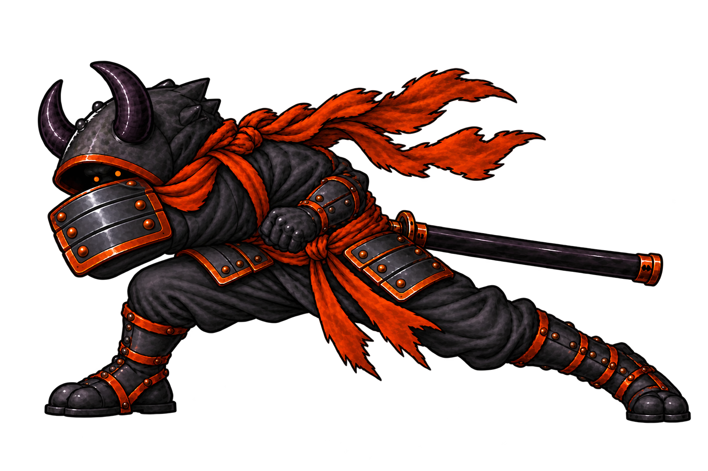

Executioner · every current frame
Redraw inventory and original-frame player. These are the current game drawings, not new approved art. The approved new character look and selected attack keys are linked below. No sprite or combat change is installed from this review.
Loading current game frame map…
New heavy-swing drawings approved September 25
These three drawings are approved as exact pose images. The older three-key strip above is also approved. The six images still need measured registration and in-between motion review before they can replace the playable `xjodan` cells.
Shoulder-bump contact · new review drawing
The armored shoulder drives the low leftward contact and the sword stays sheathed. This drawing is a candidate; its adjoining windup, travel, impact, and recovery exposures are not yet a completed animation.

Pad-first contactCandidate for visual review; not installed
Current game frames · redraw source
—Use Play to inspect the existing sequence. Each card below names the exact source cell to replace or preserve during the redraw.
Atlas has 609 physical cells. Cells without direct frame names are kept in the inventory because older numeric routes may still use them; they are not automatically safe to delete.